GPIO使用参考
1. 概述¶
General Purpose Input Output （通用输入/输出）简称为GPIO。GPIO 采用标准的LINUX框架，能够使用统一的接口来操作gpio。
Figure 1: GPIO框架
GPIO的框架如上图，中间层是 gpiolib，用于管理系统中的 GPIO。gpiolib 汇总了 GPIO 的通用操作，根据 GPIO 的特性，gpiolib 对上（其他 Drivers）提供的一套统一通用的操作 GPIO 的软件接口。对下，Gpiolib 提供了针对不同芯片操作的一套 framework，针对不同芯片，只需要实现mdrv_gpio_io.c，然后使用 Gpiolib 提供的注册函数，将其挂接到 Gpiolib 上。
2. GPIO NUM与PAD对应表¶
请通过原理图上GPIO 的Pad name在表1-1中查找对应的GPIO Index，GPIO Index作为软件操作GPIO相关函数的输入参数使用。
例如：希望操作的GPIO为 PAD_UART_TX2，根据表1-1中的内容找到对应的GPIO Index为6。
表1-1：GPIO NUM与PAD对应表
| Pad Name | Index | Pad Name | Index | Pad Name | Index | Pad Name | Index |
|---|---|---|---|---|---|---|---|
| PAD_SD1_IO1 | 0 | PAD_SD1_IO0 | 1 | PAD_SD1_IO5 | 2 | PAD_SD1_IO4 | 3 |
| PAD_SD1_IO3 | 4 | PAD_SD1_IO2 | 5 | PAD_SD1_IO6 | 6 | PAD_UART1_RX | 7 |
| PAD_UART1_TX | 8 | PAD_SPI0_CZ | 9 | PAD_SPI0_CK | 10 | PAD_SPI0_DI | 11 |
| PAD_SPI0_DO | 12 | PAD_PWM0 | 13 | PAD_PWM1 | 14 | PAD_SD_CLK | 15 |
| PAD_SD_CMD | 16 | PAD_SD_D0 | 17 | PAD_SD_D1 | 18 | PAD_SD_D2 | 19 |
| PAD_SD_D3 | 20 | PAD_USB_CID | 21 | PAD_PM_SD_CDZ | 22 | PAD_PM_IRIN | 23 |
| PAD_PM_UART_RX | 24 | PAD_PM_UART_TX | 25 | PAD_PM_GPIO0 | 26 | PAD_PM_GPIO1 | 27 |
| PAD_PM_GPIO2 | 28 | PAD_PM_GPIO3 | 29 | PAD_PM_GPIO4 | 30 | PAD_PM_GPIO7 | 31 |
| PAD_PM_GPIO8 | 32 | PAD_PM_GPIO9 | 33 | PAD_PM_SPI_CZ | 34 | PAD_PM_SPI_DI | 35 |
| PAD_PM_SPI_WPZ | 36 | PAD_PM_SPI_DO | 37 | PAD_PM_SPI_CK | 38 | PAD_PM_SPI_HLD | 39 |
| PAD_PM_LED0 | 40 | PAD_PM_LED1 | 41 | PAD_FUART_RX | 42 | PAD_FUART_TX | 43 |
| PAD_FUART_CTS | 44 | PAD_FUART_RTS | 45 | PAD_GPIO0 | 46 | PAD_GPIO1 | 47 |
| PAD_GPIO2 | 48 | PAD_GPIO3 | 49 | PAD_GPIO4 | 50 | PAD_GPIO5 | 51 |
| PAD_GPIO6 | 52 | PAD_GPIO7 | 53 | PAD_GPIO14 | 54 | PAD_GPIO15 | 55 |
| PAD_I2C0_SCL | 56 | PAD_I2C0_SDA | 57 | PAD_I2C1_SCL | 58 | PAD_I2C1_SDA | 59 |
| PAD_SR_IO00 | 60 | PAD_SR_IO01 | 61 | PAD_SR_IO02 | 62 | PAD_SR_IO03 | 63 |
| PAD_SR_IO04 | 64 | PAD_SR_IO05 | 65 | PAD_SR_IO06 | 66 | PAD_SR_IO07 | 67 |
| PAD_SR_IO08 | 68 | PAD_SR_IO09 | 69 | PAD_SR_IO10 | 70 | PAD_SR_IO11 | 71 |
| PAD_SR_IO12 | 72 | PAD_SR_IO13 | 73 | PAD_SR_IO14 | 74 | PAD_SR_IO15 | 75 |
| PAD_SR_IO16 | 76 | PAD_SR_IO17 | 77 | PAD_SAR_GPIO3 | 78 | PAD_SAR_GPIO2 | 79 |
| PAD_SAR_GPIO1 | 80 | PAD_SAR_GPIO0 | 81 |
3. 内核使用GPIO¶
3.1. 申请gpio端口¶
-
目的
创建端口为GPIO。
-
语法
int gpio_request(unsigned gpio, const char *label)
-
参数
参数名称 描述 gpio GPIO Index label 具体名称 -
返回值
返回值 描述 0 成功 other 失败
3.2. 释放gpio端口¶
-
目的
释放GPIO端口。
-
语法
void gpio_free(unsigned gpio)
-
参数
参数名称 描述 gpio GPIO Index -
返回值
返回值 描述 void 无
3.3. 设为输入¶
-
目的
标记gpio为输入。
-
语法
int gpio_direction_input(unsigned gpio);
-
参数
参数名称 描述 gpio GPIO Index -
返回值
返回值 描述 0 成功 other 失败
3.4. 设为输出¶
-
目的
标记gpio为输出。
-
语法
int gpio_direction_output(unsigned gpio, int value);
-
参数
参数名称 描述 gpio GPIO Index value 输出值 -
返回值
返回值 描述 0 成功 other 失败
3.5. 获取输入电平¶
-
目的
获取输入引脚的电平。
-
语法
int gpio_get_value(unsigned gpio);
-
参数
参数名称 描述 gpio GPIO Index -
返回值
返回值 描述 int 电平值
3.6. 设置输出电平¶
-
目的
设定输出引脚的电平。
-
语法
void gpio_set_value(unsigned gpio, int value);
-
参数
参数名称 描述 gpio GPIO Index value 输出值 -
返回值
返回值 描述 0 成功 other 失败
3.7. 设置引脚为GPIO MODE¶
-
目的
设置引脚为GPIO MODE。
-
语法
void MDrv_GPIO_Pad_Set(U8 u8IndexGPIO);
-
参数
参数名称 描述 u8IndexGPIO Group Index -
返回值
返回值 描述 void 无
3.8. 设置引脚的TMUX模式¶
-
目的
设置引脚的TMUX模式。
-
语法
U8 MDrv_GPIO_PadVal_Set(U8 u8IndexGPIO, U32 u32PadMode);
-
参数
参数名称 描述 u8IndexGPIO Group Index u32PadMode TMUX MODE -
返回值
返回值 描述 1 输出参数错误 0 成功
3.9. 获取引脚的TMUX模式¶
-
目的
获取引脚的TMUX模式。
-
语法
U8 MDrv_GPIO_PadVal_Get(U8 u8IndexGPIO, U32 u32PadMode);
-
参数
参数名称 描述 u8IndexGPIO Group Index u32PadMode 获取到的TMUX MODE -
返回值
返回值 描述 1 输出参数错误 0 成功
3.10. 设置引脚的电压模式¶
-
目的
获取输入引脚的电平。
-
语法
void MDrv_GPIO_VolVal_Set(U8 u8Group, U32 u32PadMode);
-
参数
参数名称 描述 u8Group Group num (11 Groups in total) u32PadMode Mode = 0：引脚电压为3.3V； Mode = 1：引脚电压为1.8V -
返回值
返回值 描述 void 无
3.11. 获取引脚状态¶
-
目的
判断引脚的状态是输入还是输出。
-
语法
U8 MDrv_GPIO_Pad_InOut(U8 u8IndexGPIO, U8 u8PadLevel);
-
参数
参数名称 描述 u8IndexGPIO GPIO Index u8PadLevel 1表示引脚状态为输出，0表示引脚状态为输入 -
返回值
返回值 描述 1 输入参数错误 0 成功
3.12. 设置GPIO的上拉功能¶
-
目的
开启指定的GPIO上拉功能。
-
语法
U8 MDrv_GPIO_Pull_Up(U8 u8IndexGPIO);
-
参数
参数名称 描述 u8IndexGPIO GPIO Index -
返回值
返回值 描述 0 设置成功 other 该引脚不支持上拉设置或者输入参数错误
3.13. 设置GPIO的下拉功能¶
-
目的
开启指定的GPIO下拉功能。
-
语法
U8 MDrv_GPIO_Pull_Down(U8 u8IndexGPIO);
-
参数
参数名称 描述 u8IndexGPIO GPIO Index -
返回值
返回值 描述 0 设置成功 other 该引脚不支持下拉设置或者输入参数错误
3.14. 关闭GPIO的上/下拉功能¶
-
目的
关闭指定的GPIO上/下拉功能，并切换至悬空状态。
-
语法
U8 MDrv_GPIO_Pull_Off(U8 u8IndexGPIO);
-
参数
参数名称 描述 u8IndexGPIO GPIO Index -
返回值
返回值 描述 0 设置成功 other 该引脚不支持上拉设置或者输入参数错误
3.15. 获取GPIO的上/下拉状态¶
-
目的
获取指定的GPIO上/下拉状态。
-
语法
U8 MDrv_GPIO_Pull_Status(U8 u8IndexGPIO, U8* u8PullStatus);
-
参数
参数名称 描述 u8IndexGPIO GPIO Index U8PullStatus 获取到的上/下拉状态 -
返回值
返回值 描述 0 获取成功 1 该引脚不支持上拉设置或者输入参数错误
3.16. 设置GPIO的驱动能力¶
-
目的
设置指定的GPIO的驱动能力。
-
语法
U8 MDrv_GPIO_Drv_Set(U8 u8IndexGPIO, U8 u8Level);
-
参数
参数名称 描述 u8IndexGPIO GPIO Index u8Level 驱动能力等级 -
返回值
返回值 描述 0 设置成功 other 该引脚不支持驱动能力设置或者输入参数错误
3.17. 获取GPI的驱动能力等级¶
-
目的
获取指定的GPIO的驱动能力等级。
-
语法
U8 MDrv_GPIO_Drv_Get(U8 u8IndexGPIO, U8* u8Level);
-
参数
参数名称 描述 u8IndexGPIO GPIO Index u8Level 获取到的GPIO的驱动能力等级 -
返回值
返回值 描述 0 获取成功 1 该引脚不支持驱动能力设置或者输入参数错误
3.18. 获取GPIO的中断号¶
-
目的
获取指定的GPIO的中断号。
-
语法
int MDrv_GPIO_To_Irq(U8 u8IndexGPIO);
-
参数
参数名称 描述 u8IndexGPIO GPIO Index -
返回值
返回值 描述 virq Virq为返回的中断号 负数或0 失败
3.19. 获取GPIO Index¶
-
目的
通过GPIO Name获取GPIO Index。
-
语法
U8 MDrv_GPIO_NameToNum(U8 pu8Name, U8* GpioIndex);
-
参数
参数名称 描述 u8IndexGPIO GPIO Index GpioIndex 获取到的GPIO Index -
返回值
返回值 描述 1 输入参数错误 0 成功
3.20. 获取特定PadMode对应的PIN脚¶
-
目的
查询能够使用某一个特定PadMode的所有GPIO脚。
-
语法
U32* MDrv_GPIO_PadModeToPadIndex(U32 u32Mode);
-
参数
参数名称 描述 u32Mode 所要查询的PadMode -
返回值
返回值 描述 数组首地址 存放GPIO Index的数组
4. 用户空间使用GPIO¶
4.1. export/unexport文件接口¶
用户空间可以通过sysfs接口操作GPIO：首先需要打开 CONFIG_GPIO_SYSFS 配置，该配置位于menuconfig中：Device Drivers -> GPIO support -> /sys/class/gpio/... (sysfs interface)
/sys/class/gpio对应的源码位于driver/gpio/gpiolib-sysfs.c
/sys/class/gpio目录下的包含export/unexport、gpioN、gpio_chipN三种文件：
| 文件名 | 读写权限 | 值 | 描述 |
|---|---|---|---|
| export | wo | GPIO Index | 在用户空间申请某个GPIO的控制权 |
| unexport | wo | GPIO Index | 在用户空间移除某个GPIO的控制权 |
| gpioN | ro | 包含具体GPIO的direction、value等信息 | |
| gpio_chipN | ro | 指代GPIO控制器 |
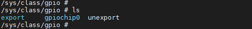
-
/sys/class/gpio/export 文件属性为只允许写不允许读，用户程序通过写入GPIO的编号来向内核申请将某个GPIO的控制权导出到用户空间（sysfs），前提是没有内核代码申请这个GPIO端口，如用户申请编号为12的GPIO的命令：
# echo 12 > export
上述操作会为GPIO Index为12的GPIO创建一个节点gpio12，此时/sys/class/gpio目录下边生成一个gpio12的目录，如下图所示：
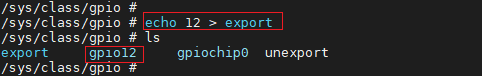
-
/sys/class/gpio/unexport 文件属性也为只允许写不允许读，和export的效果相反，用户通过写入GPIO的编号来移除用户空间（sysfs）的接口。如移除gpio12文件夹的操作命令：
# echo 12 > unexport
上述操作将会移除gpio12这个节点，如下图所示：
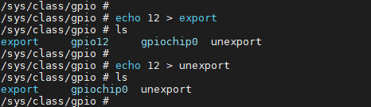
4.2. /sys/class/gpio/gpioN¶
/sys/class/gpio/gpioN 指代某个具体的gpio端口，里边有如下属性文件：
| 文件名 | 读写权限 | 值 | 描述 |
| direction | rw | in | 输入模式，value不可写 |
| out | 输出模式，value可写 | ||
| high | 输出状态，默认高电平状态，value可写 | ||
| low | 输出状态，默认低电平状态，value可写 | ||
| value | rw | 1 | 高电平状态 |
| 0 | 低电平状态 |
direction 表示gpio端口的方向，读取结果是in或out，读取命令为：
# cat direciton
value 表示gpio引脚的电平，0表示低电平，1表示高电平；读取命令为：
# cat value
可以对direction进行写操作，命令为：
# echo in > direction
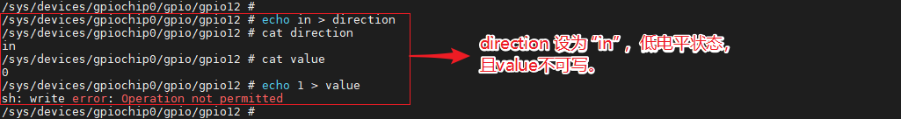
# echo out > direction
如果direction被配置为输出（out），电平默认为低，同时value是可写的，操作命令为：
# echo 1 > value # echo 0 > value
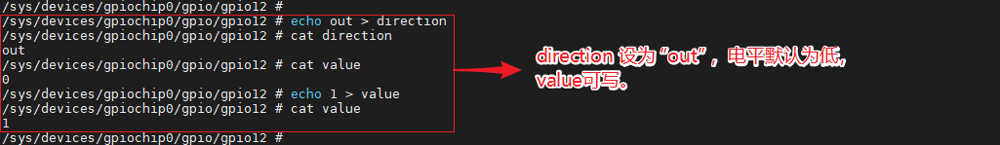
direction写入low或high时不仅可以设置为输出还可以设置指定的输出电平。操作命令为：
# echo high > direction
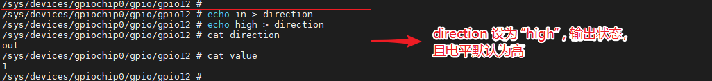
# echo low > direction
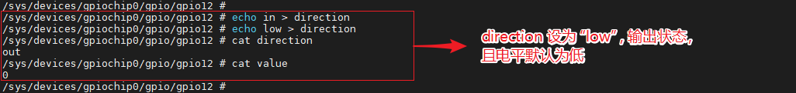
当然如果内核不支持或者内核代码不愿意，将不会存在这个属性，比如内核调用了gpio_export(N,0)就表示内核不愿意修改gpio端口方向属性。
记住任何非零的值都将输出为高电平。如果某个引脚被配置为中断，则可以调用poll(2)函数监听该中断，中断触发后poll(2)函数就会返回。
4.3. /sys/class/mstar/msys¶
LINUX GPIO框架暂时未支持GPIO上下拉和驱动能力调节相关配置，在LINUX的GPIO标准框架外，我们又增加了另外的文件接口用于操作GPIO的上下拉和调节驱动能力。如需支持此功能，首先需要打开 CONFIG_MSYS_GPIO 配置，该配置位于menuconfig中：Device Drivers -> SStar SoC platform drivers -> msys api ->support GPIO pull and driving modify
/sys/class/mstar/msys对应的源代码位于driver/sstar/msys/ms_msys.c
设置上拉/下拉之前需要先将GPIO设置为输入状态，输出状态上拉/下拉是没法测量的：
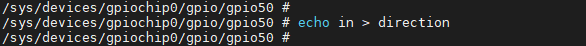
引脚设置为输入状态后，进入sys/class/mstar/msys文件夹：
-
gpio_pull 可以写入up和down
文件名 读写权限 值 描述 gpio_pull rw up 上拉模式 down 下拉模式 查看GPIO当前的pull 状态是pull up / pull down / pull off：
1. # echo 50 > gpio_pull 2. # cat > gpio_pull
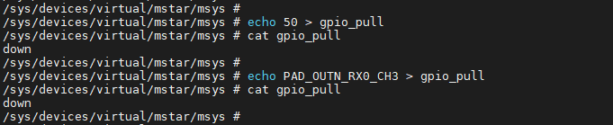
如果输入非法的GPIO Index 和GPIO Name，则会报错：
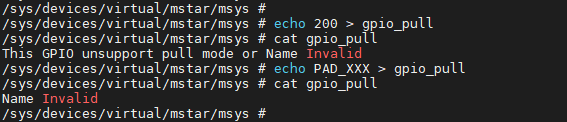
设置上拉和设置下拉的命令为：
1. # echo 50 up > gpio_pull 2. # echo 50 down > gpio_pull
设置后查看gpio_pull的状态，如下图，50表示GPIO Index，PAD_OUTN_RX0_CH3表示GPIO Name。
1. # cat gpio_pull
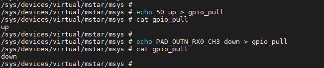
如果输入非法的GPIO Index 和GPIO Name，则会报错：
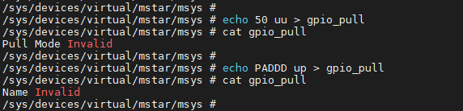
检查具体BIT是否被正确写入，可以根据GPIO_Mapping_Table，查找对应的PAD（如下图GPIO INDEX：50）。当pull up的时候PE bit位为1，PS bit位为0；pull down的时候PE bit位为1，PS bit位为0。具体操作命令为：
1. # riu_r 0x103e 0x34
查看riu_r返回值的BIT6、BIT11
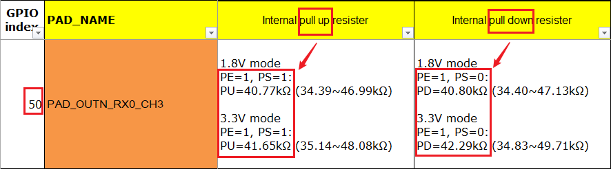
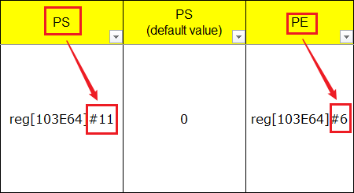
-
gpio_drive 可以写入驱动的等级
文件名 读写权限 值 描述 gpio_drive rw 0~8 设置GPIO的驱动等级 当前平台中GPIO的驱动能力等级可根据根据GPIO_Mapping_Table查阅。
查看GPIO的初始驱动能力等级的命令位：(也可以直接使用GPIO43的名称PAD_OUTP_RX0_CH0)
1. # echo 43 > gpio_drive 2. # cat > gpio_drive
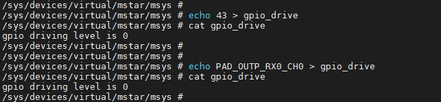
如果输入非法的GPIO Index 和GPIO Name，则会报错：
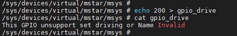
设置驱动能力之前将GPIO设置为高电平输出状态方便测量，设置命令为：
1. # echo 43 1 > gpio_drive
43为GPIO Index，1为驱动能力等级，对应4mA
设置驱动能力之后查看gpio_driver的状态，如下图，设置GPIO Index为43的引脚的驱动能力为4mA成功。
1. # cat gpio_drive
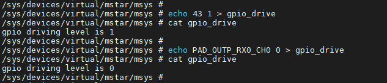
检查具体BIT是否被正确写入，可以根据GPIO_Mapping_Table，查找对应的PAD(如下图GPIO INDEX：50)。当设置驱动等级为1时，[103E56]#7 ~ #8为01。具体操作命令为：
1. # riu_r 0x103e 0x2B
查看riu_r返回值的BIT7、BIT8
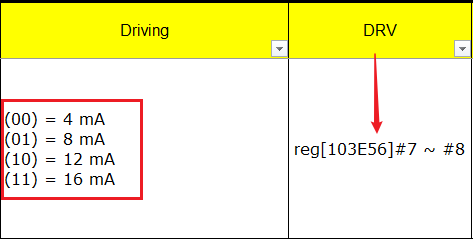
4.4. 示例¶
用户空间代码操作GPIO请参考sstargpio.c。
1. #include <stdlib.h>
2. #include <unistd.h>
3. #include <stdio.h>
4. #include <fcntl.h>
5. #include <linux/fb.h>
6. #include <linux/kd.h>
7. #include <sys/mman.h>
8. #include <sys/ioctl.h>
9. #include <sys/time.h>
10. #include <string.h>
11. #include <errno.h>
12.
13. #include "mi_sys.h"
14.
15. #define GPIO_DEV "/sys/class/gpio"
16. #define SSTAR_GPIO_IN 0
17. #define SSTAR_GPIO_OUT 1
18.
19. /* API call reference
20. SStar_Gpio_Export(10);
21. SStar_Gpio_SetDirection(10, SSTAR_GPIO_OUT);
22. SStar_Gpio_SetValue(10, 0/1);
23. */
24.
25. // export gpio port
26. MI_S32 SStar_Gpio_Export(MI_S32 s32Gpio)
27. {
28. MI_S32 s32Ret = -1;
29. MI_S32 s32Fd = -1;
30.
31. char as8GpioDev[128];
32.
33. memset(as8GpioDev, 0, sizeof(as8GpioDev));
34. sprintf(as8GpioDev, "%s/export", GPIO_DEV);
35.
36. s32Fd = open(as8GpioDev, O_WRONLY);
37.
38. if (s32Fd < 0)
39. printf("failed to export gpio %d\n", s32Gpio);
40. else
41. {
42. char as8GpioPort[10];
43. memset(as8GpioPort, 0, sizeof(as8GpioPort));
44. sprintf(as8GpioPort, "%d", s32Gpio);
45. write(s32Fd, as8GpioPort, strlen(as8GpioPort));
46. printf("export gpio port: %d\n", s32Gpio);
47. close(s32Fd);
48. s32Ret = MI_SUCCESS;
49. }
50.
51. return s32Ret;
52. }
53.
54. // set gpio direction: 0 in, others out
55. MI_S32 SStar_Gpio_SetDirection(MI_S32 s32Gpio, MI_S32 s32Direction)
56. {
57. MI_S32 s32Ret = -1;
58. const char *ps8Direction = NULL;
59. MI_S32 s32Fd = -1;
60.
61. char as8GpioDev[128];
62.
63. memset(as8GpioDev, 0, sizeof(as8GpioDev));
64. sprintf(as8GpioDev, "%s/gpio%d/direction", GPIO_DEV, s32Gpio);
65.
66. s32Fd = open(as8GpioDev, O_RDWR);
67.
68. if (s32Fd < 0)
69. printf("failed to set gpio%d direction\n", s32Gpio);
70. else
71. {
72. if (SSTAR_GPIO_IN == s32Direction)
73. ps8Direction = "in";
74. else if (SSTAR_GPIO_OUT == s32Direction)
75. ps8Direction = "out";
76. else
77. {
78. printf("Unkown gpio direction %d\n", s32Direction);
79. }
80. write(s32Fd, ps8Direction, strlen(ps8Direction));
81. printf("set gpio%d direction: %s\n", s32Gpio, ps8Direction);
82. close(s32Fd);
83. s32Ret = 0;
84. }
85.
86. return s32Ret;
87. }
88.
89. // get gpio direction
90. MI_S32 SStar_Gpio_GetDirection(MI_S32 s32Gpio, MI_S8 *ps8Direction, MI_S32 s32Len)
91. {
92. MI_S32 s32Ret = -1;
93. MI_S32 s32Fd = -1;
94.
95. char as8GpioDev[128];
96.
97. memset(as8GpioDev, 0, sizeof(as8GpioDev));
98. sprintf(as8GpioDev, "%s/gpio%d/direction", GPIO_DEV, s32Gpio);
99.
100. s32Fd = open(as8GpioDev, O_RDWR);
101.
102. if (s32Fd < 0)
103. printf("failed to read gpio%d direction\n", s32Gpio);
104. else
105. {
106. memset(ps8Direction, 0, s32Len);
107. read(s32Fd, ps8Direction, s32Len);
108. printf("get gpio%d direction: %s\n", s32Gpio, ps8Direction);
109. close(s32Fd);
110. s32Ret = MI_SUCCESS;
111. }
112.
113. return s32Ret;
114. }
115.
116. // set gpio value: 0 low, 1 high
117. MI_S32 SStar_Gpio_SetValue(MI_S32 s32Gpio, MI_S8 s8Value)
118. {
119. MI_S32 s32Ret = -1;
120. MI_S32 s32Fd = -1;
121.
122. char as8GpioDev[128];
123.
124. memset(as8GpioDev, 0, sizeof(as8GpioDev));
125. sprintf(as8GpioDev, "%s/gpio%d/value", GPIO_DEV, s32Gpio);
126.
127. s32Fd = open(as8GpioDev, O_RDWR);
128.
129. if (s32Fd < 0)
130. printf("failed to set gpio%d value\n", s32Gpio);
131. else
132. {
133. if (0 == s8Value)
134. {
135. write(s32Fd, (const void*)"0", 1);
136. }
137. else if (1 == s8Value)
138. {
139. write(s32Fd, (const void*)"1", 1);
140. }
141. else
142. {
143. printf("error:set gpio value fail (%d)\n", s8Value);
144. }
145. close(s32Fd);
146. s32Ret = MI_SUCCESS;
147. }
148.
149. return s32Ret;
150. }
151.
152. // get gpio value
153. MI_S32 SStar_Gpio_GetValue(MI_S32 s32Gpio, MI_S8 *s8Level)
154. {
155. MI_S32 s32Ret = -1;
156. MI_S32 s32Fd = -1;
157.
158. char as8GpioDev[128];
159. char as8[2];
160.
161. memset(as8, 0, sizeof(as8));
162. memset(as8GpioDev, 0, sizeof(as8GpioDev));
163. sprintf(as8GpioDev, "%s/gpio%d/value", GPIO_DEV, s32Gpio);
164.
165. s32Fd = open(as8GpioDev, O_RDWR);
166.
167. if (s32Fd < 0)
168. printf("failed to read gpio%d value\n", s32Gpio);
169. else
170. {
171. read(s32Fd, as8, 1);
172. *s8Level = atoi(as8);
173. //printf("read gpio status: %s\n", s8Value);
174. close(s32Fd);
175. s32Ret = MI_SUCCESS;
176. }
177.
178. return s32Ret;
179. }
180.
181. // get gpio value
182. int new_SStar_Gpio_GetValue(MI_S32 s32Gpio)
183. {
184. int value = -1;
185. MI_S32 s32Fd = -1;
186.
187. char as8GpioDev[128];
188. char as8[2];
189.
190. memset(as8, 0, sizeof(as8));
191. memset(as8GpioDev, 0, sizeof(as8GpioDev));
192. sprintf(as8GpioDev, "%s/gpio%d/value", GPIO_DEV, s32Gpio);
193.
194. s32Fd = open(as8GpioDev, O_RDWR);
195. if (s32Fd < 0)
196. printf("failed to read gpio%d value\n", s32Gpio);
197. else
198. {
199. read(s32Fd, as8, 1);
200. value = atoi(as8);
201. close(s32Fd);
202. }
203.
204. return value;
205. }
5. UBOOT使用GPIO¶
5.1. CMD：gpio -Config gpio port¶
gpio (对于第二个参数，请输入至少 3 个字符)
| gpio使用说明 | 举例 |
|---|---|
| gpio output [gpio#] [1/0] | gpio output 69 1 |
| gpio input/get [gpio#] | gpio input 10 (gpio 10 set as input) |
| gpio toggle [gpio#] | gpio tog 49 (toggle) |
| gpio state [gpio#] | gpio sta 49 (get i/o status(direction) & pin status) |
| gpio list [num_of_pins] | gpio list 10 (list GPIO1~GPIO10 status) |
注意：gpio# 请参考 drivers\mstar\gpio\infinity7\gpio.h
5.2. API¶
5.2.1. 设置引脚为GPIO MODE
-
目的
设置引脚为GPIO MODE。
-
语法
void MDrv_GPIO_Pad_Set(U8 u8IndexGPIO);
-
参数
参数名称 描述 u8IndexGPIO Group Index -
返回值
返回值 描述 void 无
5.2.2. 设置引脚的TMUX模式
-
目的
设置引脚的TMUX模式。
-
语法
U8 MDrv_GPIO_PadVal_Set(U8 u8IndexGPIO, U32 u32PadMode);
-
参数
参数名称 描述 u8IndexGPIO Group Index u32PadMode TMUX MODE -
返回值
返回值 描述 1 输出参数错误 0 成功
5.2.3. 获取引脚的TMUX模式
-
目的
获取引脚的TMUX模式。
-
语法
U8 MDrv_GPIO_PadVal_Get(U8 u8IndexGPIO, U32 u32PadMode);
-
参数
参数名称 描述 u8IndexGPIO Group Index u32PadMode 获取到的TMUX MODE -
返回值
返回值 描述 1 输出参数错误 0 成功
5.2.4. 设置引脚的电压模式
-
目的
获取输入引脚的电平。
-
语法
void MDrv_GPIO_VolVal_Set(U8 u8Group, U32 u32PadMode);
-
参数
参数名称 描述 u8Group Group num (11 Groups in total) u32PadMode Mode = 0：引脚电压为3.3V；
Mode = 1：引脚电压为1.8V -
返回值
返回值 描述 void 无
5.2.5. 获取引脚状态
-
目的
判断引脚的状态是输入还是输出。
-
语法
U8 MDrv_GPIO_Pad_InOut(U8 u8IndexGPIO, U8 u8PadLevel);
-
参数
参数名称 描述 u8IndexGPIO GPIO Index u8PadLevel 1表示引脚状态为输出，0表示引脚状态为输入 -
返回值
返回值 描述 1 输入参数错误 0 成功
5.2.6. 设置GPIO的上拉功能
-
目的
开启指定的GPIO上拉功能。
-
语法
U8 MDrv_GPIO_Pull_Up(U8 u8IndexGPIO);
-
参数
参数名称 描述 u8IndexGPIO GPIO Index -
返回值
返回值 描述 0 设置成功 other 该引脚不支持上拉设置或者输入参数错误
5.2.7. 设置GPIO的下拉功能
-
目的
开启指定的GPIO下拉功能。
-
语法
U8 MDrv_GPIO_Pull_Down(U8 u8IndexGPIO);
-
参数
参数名称 描述 u8IndexGPIO GPIO Index -
返回值
返回值 描述 0 设置成功 other 该引脚不支持下拉设置或者输入参数错误
5.2.8. 关闭GPIO的上/下拉功能
-
目的
关闭指定的GPIO上/下拉功能，并切换至悬空状态。
-
语法
U8 MDrv_GPIO_Pull_Off(U8 u8IndexGPIO);
-
参数
参数名称 描述 u8IndexGPIO GPIO Index -
返回值
返回值 描述 0 设置成功 other 该引脚不支持上拉设置或者输入参数错误
5.2.9. 获取GPIO的上/下拉状态
-
目的
获取指定的GPIO上/下拉状态。
-
语法
U8 MDrv_GPIO_Pull_Status(U8 u8IndexGPIO, U8* u8PullStatus);
-
参数
参数名称 描述 u8IndexGPIO GPIO Index U8PullStatus 获取到的上/下拉状态 -
返回值
返回值 描述 0 获取成功 1 该引脚不支持上拉设置或者输入参数错误
5.2.10. 设置GPIO的驱动能力
-
目的
设置指定的GPIO的驱动能力。
-
语法
U8 MDrv_GPIO_Drv_Set(U8 u8IndexGPIO, U8 u8Level);
-
参数
参数名称 描述 u8IndexGPIO GPIO Index u8Level 驱动能力等级 -
返回值
返回值 描述 0 设置成功 other 该引脚不支持驱动能力设置或者输入参数错误
5.2.11. 获取GPIO的驱动能力等级
-
目的
获取指定的GPIO的驱动能力等级。
-
语法
U8 MDrv_GPIO_Drv_Get(U8 u8IndexGPIO, U8* u8Level);
-
参数
参数名称 描述 u8IndexGPIO GPIO Index u8Level 获取到的GPIO的驱动能力等级 -
返回值
返回值 描述 0 获取成功 1 该引脚不支持驱动能力设置或者输入参数错误
5.2.12. 获取GPIO Index
-
目的
通过GPIO Name获取GPIO Index。
-
语法
U8 MDrv_GPIO_NameToNum(U8 pu8Name, U8* GpioIndex);
-
参数
参数名称 描述 u8IndexGPIO GPIO Index GpioIndex 获取到的GPIO Index -
返回值
返回值 描述 1 输入参数错误 0 成功
5.2.13. 获取特定PadMode对应的PIN脚
-
目的
查询能够使用某一个特定PadMode的所有GPIO脚。
-
语法
U32* MDrv_GPIO_PadModeToPadIndex(U32 u32Mode);
-
参数
参数名称 描述 u32Mode 所要查询的PadMode -
返回值
返回值 描述 数组首地址 存放GPIO Index的数组
6. GPIO复用功能¶
6.1. Kernel Config¶
编译Kernel时：make menuconfig
Device Drivers-->
[*] SStar SoC platform drivers-->
6.2. 复用功能使用说明¶
当需要使用GPIO的复用功能时候，首先需要获取所要操作的PIN脚的Name、所要复用的Tmux Mode，将他们配置在xxx-padmux.dtsi中：
1. <PAD_VSYNC_OUT PINMUX_FOR_VGA_VSYNC_MODE_1 MDRV_PUSE_VGA_VSYNC> 2. <PAD_HSYNC_OUT PINMUX_FOR_VGA_HSYNC_MODE_1 MDRV_PUSE_VGA_HSYNC>
如上所示，第一列和第二列分别表示Pad Name和Tmux Mode，MDRV_PUSE_XXX可以理解为当前这一组的配置的Name。
配置的时候需要注意的事项：
-
一个Pad只能配置一种Mode，不可以一个Pad同时配置多个Mode。
-
一个Puse只能对应一组配置，否则会造成冲突。
-
配置的Pad和Mode必须是匹配的。
-
不允许在驱动中直接进行复用操作，要求复用的配置都集中到xxx_padmux.dtsi。（需要动态调整复用配置的除外，这是为了方便管理和减少配置冲突，也因此这份dtsi文件中汇聚了几乎所有引脚的复用配置）
6.3. API¶
6.3.1. 获取复用到的引脚
-
目的
以Puse为检索条件遍历，获取xxx-padmux.dtsi中配置到的Pad。
-
语法
int mdrv_padmux_getpad (int Puse);
-
参数
参数名称 描述 Puse Puse的宏定义 -
返回值
返回值 描述 PadId 成功获取到padmux.dtsi中的Pad的宏定义 PAD_UNKNOWN 输入的Puse有误或者padmux.dtsi中没有对应的PadId
6.3.2. 获取复用到的Tmux Mode
-
目的
以Puse为检索条件遍历，获取xxx-padmux.dtsi中配置到的Tmux Mode。
-
语法
int mdrv_padmux_getmode (int Puse);
-
参数
参数名称 描述 Puse Puse的宏定义 -
返回值
返回值 描述 PadId 成功获取到padmux.dtsi中的Mode的宏定义 PAD_UNKNOWN 输入的Puse有误或者padmux.dtsi中没有对应的PadId
6.3.3. 获取PUSE的宏定义
-
目的
因为PUSE的宏定义遵循一套规则：
-
不同IP之间的偏移为0x10000
-
同一个IP中不同Channel之间的偏移为0x100
-
同一个IP同一个Channel中不同Puse之间的偏移为0x1
因此可以根据这三个参数获取Puse的宏定义。
-
-
语法
int mdrv_padmux_getpuse (int IP_Index, int Channel_Index, int Pad_Index);
-
参数
参数名称 描述 IP_Index Puse所在的IP，可在mdrv_puse.h中查阅 Channel_Index Puse所在的Channel，可在mdrv_puse.h中查阅 Pad_Index Puse在channel中的Index，可在mdrv_puse.h中查阅 -
返回值
返回值 描述 Puse 成功获取到padmux.dtsi中的PadId
6.3.4. 获取特定PadMode对应的PIN脚
-
目的
查询能够使用某一个特定PadMode的所有GPIO脚。
-
语法
U32* MDrv_GPIO_PadModeToPadIndex(U32 u32Mode);
-
参数
参数名称 描述 u32Mode 所要查询的PadMode -
返回值
返回值 描述 数组首地址 存放GPIO Index的数组
6.3.5. 获取特定Pad目前的Tmux Mode
-
目的
该API用于获取某只Pad当前配置的PadMode，前提是这只Pad配置PadMode的时候是通过Padmux接口进行配置，直接操作寄存器进行配置的方式则不会使该API生效。
-
语法
U8* MDrv_GPIO_PadValGet (U8 u8IndexGPIO, U32* u32PadMode);
-
参数
参数名称 描述 u8IndexGPIO 所要查询的PadMode u32PadMode 获取到的PadMode -
返回值
返回值 描述 1 成功 0 失败